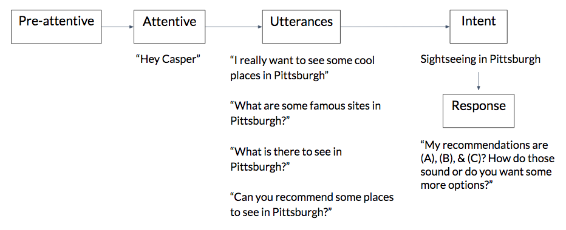

Final Product
Process
Research
Domain Overview
I conducted a literature review, read through case studies, looked at news articles, and skimmed over op eds on the New York times. Here are my summarized findings about how conversational user interfaces are currently used in autonomous vehicles.
Ecosystem Collection
I utilized ecosystem collection as a tool to consolidate our findings from our domain research about the potential range of users for our product. It also helped in filling gaps in our team’s knowledge. We categorized our ecosystem into the following.

Competitive Analysis
I looked at multiple companies, talked to users, and looked at online industry reports to collect the information. After doing so, me and my team wrote down our notes on stickies, and found the following common trends and patterns.
Findings

Concept Development
Scenarios
We created a total of 20 scenarios to expand our scope and ultimately chose the scenario below, as we felt it could both create value for the customer and provide a base for a fully fleshed out business model. The full list of scenarios can be found HERE.
Script and Model Creation
While creating our script we wanted to address what we felt were the main values added by Casper. The full script can be found HERE. We then created a fleshed out conversation model by which Casper could operate. Here’s an excerpt from the model that highlights in what ways Casper can be activated and how Casper can recognize different intents and provide value to the user.

Storyline Development
While working through the script we identified how the concept video would follow a story line arc. We recognized at which point the user watching the video would make a connection with the issue presented, and understand the value of the solution being provided.

Roleplaying & Critique
This activity was helpful in thinking about Casper’s limitations, as well as specific use cases. Some of the main points included sentiments regarding riders’ skepticism due to safety concerns, the specific role of the CUI within the car, and the degree to which the CUI should seem “human”.

High Fidelity Concept Video
Transitioning from our script and storyboards to shooting our video took detailed planning and execution. I wanted to tell a story of two friends and how a boring day after a college tour became a one of a kind experience because of Casper, and translating that sentiment to an on screen experience was challenging. Here’s what the final product looked like:
Pitch
The last component to our project was communicating the value of the service embedded product we had just created to the rest of our peers.